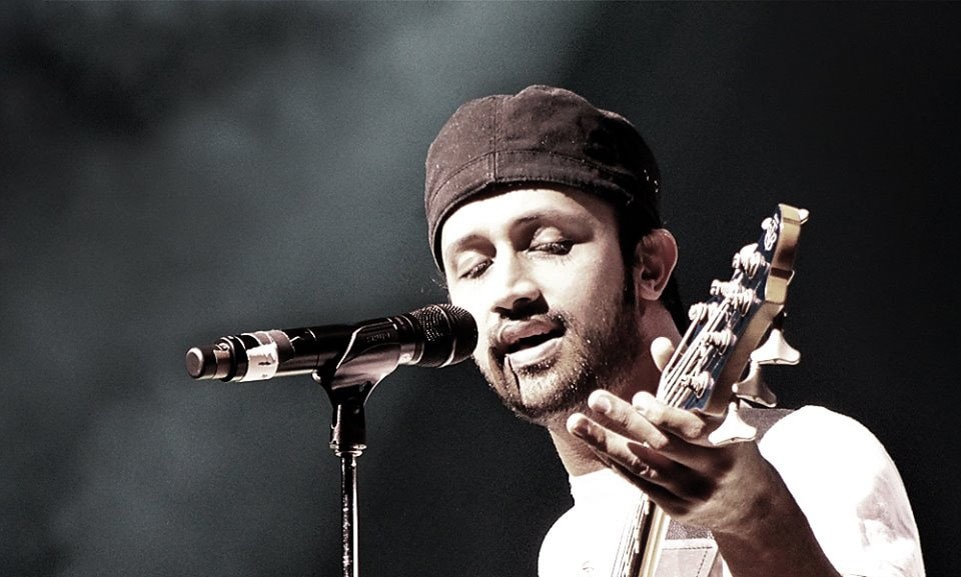

Music is the universal language, and the singer is the voice that speaks to the soul.
Lata Mangeshkar
Lata Mangeshkar, often referred to as the "Nightingale of India," was a legendary Indian playback singer and one of the most iconic figures in Indian music. Her career spanned over seven decades, and she is celebrated for her melodious voice, remarkable range, and significant contribution to Indian cinema and music.
Early Life
- Birth: Lata Mangeshkar was born on September 28, 1929 in Indore, Madhya Pradesh, India.
- Parents: Her father, Pandit Deenanath Mangeshkar, was a classical singer and theater actor.
- Siblings: Lata was the eldest of five siblings, including singers Asha Bhosle.
- Education: She received training in classical music from her father.
Career Highlights
- Debut: Lata began her career at a very young age to support her family after her father's death.
- Breakthrough: In 1949, she gained nationwide recognition with the song "Aayega Aanewala" from the Hindi film Mahal.
- Range and Versatility: Sang in over 36 Indian languages and several foreign languages.
- Iconic Songs:
- "Pyar Kiya To Darna Kya" (Mughal-e-Azam)
- "Lag Ja Gale" (Woh Kaun Thi?)
Awards and Recognitions
- Bharat Ratna: Received India's highest civilian honor in 2001.
- Padma Bhushan: Awarded in 1969, Padma Vibhushan followed in 1999.
- Dadasaheb Phalke Award: Won in 1989 for her immense contribution to Indian cinema.
Personal Life and Legacy
- Lata Mangeshkar dedicated her life to music and inspired countless generations of singers.
- Her humility and philanthropy have left an indelible mark on Indian society.
Cultural Impact
Lata Mangeshkar's voice became an integral part of Indian cultural identity. Her contributions to music and cinema were unparalleled, and she continues to be celebrated as one of the greatest singers in the history of Indian music.
Listen to iconic songs Click Here!
Kishore Kumar
Kishore Kumar, born Abhas Kumar Ganguly, was one of India's most versatile and legendary playback singers, actors, composers, and filmmakers. Known for his unique voice and unparalleled ability to adapt to various musical styles, Kishore Kumar remains an icon in Indian cinema and music.
Early Life
- Birth: Kishore Kumar was born on August 4, 1929, in Khandwa, Madhya Pradesh, India.
- Family:
- Youngest of four siblings, with elder brothers Ashok Kumar and Anoop Kumar.
- Parents: Kunjalal Ganguly (lawyer) and Gouri Devi (homemaker).
- Education: Completed schooling in Khandwa and later moved to Mumbai.
Career Highlights
- Debut:
- First playback song: "Marne Ki Duayen Kyon Mangu" for Ziddi (1948), composed by Khemchand Prakash.
- Inspired by singer-actor K.L. Saigal.
- Breakthrough: 1969 film Aradhana with iconic songs like "Mere Sapno Ki Rani" and "Roop Tera Mastana".
- Signature Hits:
- "Yeh Shaam Mastani"
- "Zindagi Ek Safar Hai Suhana"
- "Tere Bina Zindagi Se"
- "O Saathi Re"
- "Aanewala Pal"
- "Humein Tumse Pyar Kitna"
Acting Career
- Debut: Acting debut in Shikari (1946).
- Comedy and Style: Known for quirky style and comedic timing in films like Chalti Ka Naam Gaadi (1958) and Padosan (1968).
- Filmmaker: Directed films like Jhumroo (1961) and Door Gagan Ki Chhaon Mein (1964).
Awards and Recognitions
- Filmfare Awards: Won 8 Filmfare Awards for Best Male Playback Singer, a record.
- Posthumous Honors: Received the Lata Mangeshkar Award from the Madhya Pradesh government.
Listen to iconic songs Click Here!
Arijit Singh
Arijit Singh is one of India's most celebrated playback singers, known for his soulful voice and versatile singing style. He has made an indelible mark in Bollywood and Indian music with numerous chart-topping hits across multiple languages.
Early Life
- Birth: Arijit Singh was born on April 25, 1987, in Jiaganj, Murshidabad, West Bengal, India.
- Family:
- His father is a Punjabi, while his mother was Bengali.
- He comes from a musically inclined family—his grandmother was a classical singer, and his mother played the tabla.
- Education:
- He attended Raja Bijay Singh High School and Sripat Singh College in Murshidabad.
- Arijit trained in classical music under Rajendra Prasad Hazari, and later learned tabla from Dhirendra Prasad Hazari and Rabindra Sangeet from Birendra Prasad Hazari.
Career Highlights
- Reality Show Journey:
- Arijit began his career by participating in the reality show Fame Gurukul in 2005. Although he did not win, his talent caught the attention of filmmaker Sanjay Leela Bhansali and composer Pritam.
- He later participated in another reality show, 10 Ke 10 Le Gaye Dil, which he won.
- Background and Training:
- After the shows, Arijit worked as a music programmer and arranger for prominent composers like Shankar-Ehsaan-Loy, Vishal-Shekhar, and Pritam.
Breakthrough in Bollywood
- Debut: Arijit's Bollywood singing debut was the song "Phir Mohabbat" from the movie Murder 2 (2011).
- Rise to Fame: The 2013 song "Tum Hi Ho" from Aashiqui 2 catapulted him to stardom. The song earned him numerous accolades and a massive fan following.
- Signature Style: Known for his emotive singing, Arijit's ability to express intense feelings through his voice has made him a favorite for romantic, melancholic, and soulful tracks.
- Versatility: He has sung in a variety of genres, including romantic ("Channa Mereya"), dance numbers ("Badtameez Dil"), and Sufi-inspired songs ("Aayat").
Regional Music
In addition to Hindi, Arijit has sung in multiple Indian languages, including Bengali, Tamil, Telugu, Kannada, and Marathi.
Popular Songs
- Romantic Hits:
- "Tum Hi Ho" (Aashiqui 2)
- "Channa Mereya" (Ae Dil Hai Mushkil)
- "Raabta" (Agent Vinod)
- "Jeene Laga Hoon" (Ramaiya Vastavaiya)
- Melancholic Songs:
- "Agar Tum Saath Ho" (Tamasha)
- "Tera Yaar Hoon Main" (Sonu Ke Titu Ki Sweety)
- Dance Numbers:
- "Badtameez Dil" (Yeh Jawaani Hai Deewani)
- "Nashe Si Chadh Gayi" (Befikre)
- Regional Hits:
- "Mon Majhi Re" (Bengali)
- "Kannamma" (Tamil)
Personal Life
- Marriage: Arijit married his childhood friend Koel Roy in 2014. The couple has children and leads a private life.
- Philanthropy: Arijit is actively involved in charity, supporting various causes through his earnings and resources.
- Hobbies: Apart from music, he enjoys cycling, reading, and traveling.
Awards and Recognitions
- Filmfare Awards: Won multiple awards, including Best Male Playback Singer for "Tum Hi Ho" and "Channa Mereya".
- National Recognition: Honored with several awards, including IIFA, Zee Cine Awards, and Screen Awards.
- Streaming Success: Arijit is one of the most-streamed Indian artists on platforms like Spotify and JioSaavn.
Legacy
- Impact on Music: Often compared to legends like Kishore Kumar and Mohammed Rafi, Arijit is considered one of the greatest playback singers of his generation.
- Global Reach: His songs are cherished by fans worldwide, transcending language and cultural barriers.
- Evergreen Voice: With his unmatched voice and dedication to music, Arijit continues to inspire aspiring singers and touch millions of hearts.

Listen to iconic songs Click Here!
Shreya Ghoshal
Shreya Ghoshal is one of India's most versatile and renowned playback singers, known for her melodious voice and exceptional singing talent. With a career spanning over two decades, she has become a household name in the Indian music industry and has a massive fan base worldwide.
Early Life
- Birth: Shreya Ghoshal was born on March 12, 1984, in Murshidabad, West Bengal, India.
- Family:
- Her father, Biswajit Ghoshal, is an electrical engineer who worked for the Nuclear Power Corporation of India.
- Her mother, Sarmistha Ghoshal, is a homemaker and a literature enthusiast.
- The family moved to Rawatbhata, Rajasthan, where Shreya spent most of her childhood.
- Education:
- Shreya attended Atomic Energy Central School in Rawatbhata.
- She later graduated in Arts with a major in English from SIES College of Arts, Science, and Commerce in Mumbai.
Musical Training
Shreya began learning music at the age of four under her mother’s guidance. She later trained in Hindustani classical music under Mahesh Chandra Sharma in Kota, Rajasthan. At the age of six, she started formal classical music training. She won the All India Light Vocal Music Competition in 1995, organized by Sangam Kala Group in New Delhi.
Career Highlights
- Reality Show Success:
- Shreya gained national attention by winning the music reality show Sa Re Ga Ma Pa in 2000 when she was just 16 years old.
- Her performance impressed filmmaker Sanjay Leela Bhansali, who offered her the opportunity to sing in his film.
- Bollywood Debut:
- Shreya made her Bollywood playback singing debut with "Bairi Piya" from the movie Devdas (2002), directed by Sanjay Leela Bhansali.
- The song became an instant hit, earning her a National Film Award and a Filmfare Award for Best Female Playback Singer.
Success in Playback Singing
- Versatility: Shreya has sung in a wide range of genres, including romantic songs ("Teri Ore"), classical ("O Rangrez"), peppy numbers ("Chikni Chameli"), and devotional songs ("Jaadu Hai Nasha Hai").
- Languages: Apart from Hindi, Shreya has sung in over 20 Indian languages, including Bengali, Tamil, Telugu, Kannada, Malayalam, Marathi, Gujarati, and Punjabi.
- Popular Bollywood Songs:
- "Teri Meri" (Bodyguard)
- "Sun Raha Hai" (Aashiqui 2)
- "Deewani Mastani" (Bajirao Mastani)
- "Agar Tum Mil Jao" (Zeher)
- "Piyu Bole" (Parineeta)
Personal Life
- Marriage: Shreya married her childhood friend Shiladitya Mukhopadhyaya, an entrepreneur, on February 5, 2015, in a private ceremony.
- Motherhood: The couple welcomed their son, Devyaan Mukhopadhyaya, in 2021.
Awards and Achievements
- National Film Awards: Won 4 National Film Awards for her exceptional contributions to playback singing.
- Filmfare Awards: Recipient of multiple Filmfare Awards, including the Filmfare RD Burman Award for New Music Talent.
- State Awards: Honored with numerous state awards for her songs in regional films.
- Global Recognition: Shreya Ghoshal was included in Forbes India's "Top 100 Celebrities" list multiple times and was the first Indian singer to have a wax figure at Madame Tussauds Museum in Delhi.
Notable Collaborations
Shreya has worked with top composers like A.R. Rahman, Pritam, Vishal-Shekhar, Shankar-Ehsaan-Loy, and M.M. Keeravani. She has also sung duets with renowned singers like Sonu Nigam, Arijit Singh, Udit Narayan, and SP Balasubrahmanyam.
Awards and Recognitions
- Filmfare Awards: Won multiple awards, including Best Male Playback Singer for "Tum Hi Ho" (Aashiqui 2) and "Channa Mereya" (Ae Dil Hai Mushkil).
- National Recognition: Honored with several awards, including IIFA, Zee Cine Awards, and Screen Awards.
- Streaming Success: Arijit is one of the most-streamed Indian artists on platforms like Spotify and JioSaavn.
Legacy
- Charity Work: Shreya is actively involved in various charitable causes, including education for underprivileged children and animal welfare.
- Influence on Music: Known as the “Melody Queen of India,” Shreya has inspired a generation of young singers with her dedication and artistry.
Fun Facts
- Shreya's first recorded song was in the Bhojpuri language when she was just six years old.
- She enjoys cooking, traveling, and reading in her leisure time.
- Shreya is a devoted fan of Lata Mangeshkar and considers her the greatest influence on her singing career.
Listen to iconic songs Click Here!
Atif Aslam
Atif Aslam is a Pakistani playback singer who has gained immense popularity in Bollywood, known for his deep and soulful voice, which has charmed music lovers across the globe.
Early Life
- Birth: Born on March 12, 1983, in Wazirabad, Punjab, Pakistan.
- Family: Grew up in a middle-class Punjabi family, living in Lahore and Rawalpindi.
- Education:
- Attended Kimberley Hall School in Lahore and Divisional Public School in Rawalpindi.
- Graduated from Punjab College, Lahore, with a degree in Computer Science.
- Hobbies: Initially aspired to become a professional cricketer and played as a fast bowler at the school level.
Musical Career
Early Beginning
Atif discovered his singing talent during college. Encouraged by friends, he first performed at a college farewell event, marking the beginning of his musical journey.
Rise to stardom
- Jal Band:
- Started with the band Jal and recorded the iconic song "Aadat" in 2003.
- Gained massive popularity but eventually pursued a solo career.
- Debut Album:
- Released his first solo album, Jal Pari (2004), featuring hits like "Bheegi Yaadein," "Ehsaas," and "Mahi Ve."
Bollywood Success
- Notable Bollywood Songs:
- "Tera Hone Laga Hoon" (Ajab Prem Ki Ghazab Kahani)
- "Tu Jaane Na" (Ajab Prem Ki Ghazab Kahani)
- "Jeene Laga Hoon" (Ramaiya Vastavaiya)
- "Tera Ban Jaunga" (Kabir Singh)
- "Pehli Nazar Mein" (Race)
- "Dil Diyan Gallan" (Tiger Zinda Hai)
Personal Life
- Marriage: Married his longtime partner Sara Bharwana, an educationist, in 2013.
- Children: The couple has two sons.
- Personality: Known for his humility and grounded nature despite his immense fame.
Awards and Achievements
- Lux Style Awards: Multiple wins for Best Singer.
- Filmfare Nominations: Recognized for his contributions to Bollywood music.
- Tamgha-e-Imtiaz: Received Pakistan's prestigious civilian award in 2008.
- Global Fame: Known for sold-out concerts worldwide and a massive international fanbase.
Legacy
Atif Aslam’s unique voice and emotive singing style have inspired countless aspiring musicians. His songs continue to resonate with fans across generations, solidifying his place as one of the most beloved artists in South Asia.
Atif Aslam remains an icon of soulful music, bridging cultural gaps and bringing people together through his timeless melodies.
Listen to iconic songs Click Here!